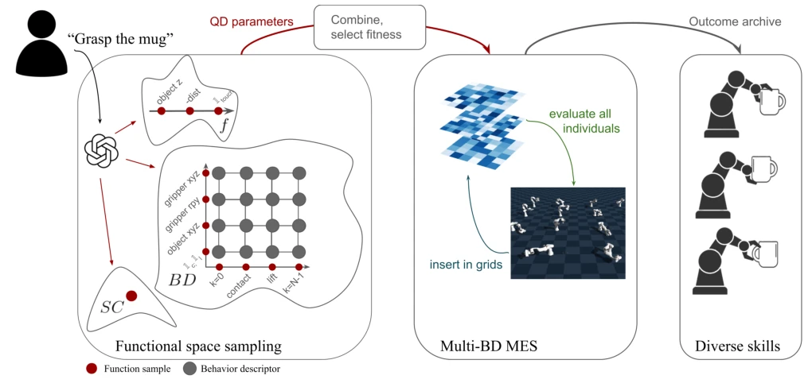
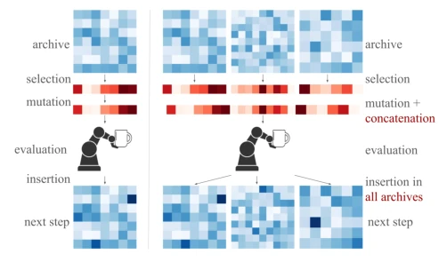
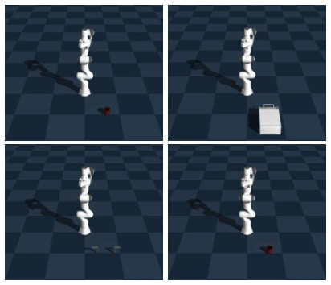

This paper employs an LLM as a "referee" for the QD algorithm, attempting to enable robots to write "game rules" autonomously. The highlight is the successful automation from natural language to a motion primitive library, eliminating the need for experts to manually craft metrics, which addresses the chronic issue of QD's reliance on expert design. However, the drawbacks are evident: all experiments run within the Genesis simulator, leaving the Sim2Real gap unaddressed; while LLM sampling reduces human effort, the quality of generated metrics relies heavily on luck (randomness persists even at temperature=0), and although the multi-BD architecture offers coverage, the computational overhead is estimated to be significant, with the paper admitting to high variance. Overall, this is an interesting attempt in the direction of "automation," but it remains several physics engines away from true general embodied intelligence; future progress depends on how curriculum learning and domain randomization can compensate.
Existing QD algorithms (such as MAP-Elites) can generate diverse motion primitive libraries, enhancing robustness during robot deployment [5, 6]. However, the pain point lies in the fact that designing fitness functions, Behavior Descriptors (BD), and success conditions requires experts to undergo repeated trial-and-error, severely limiting autonomy [8]. On the other hand, while LLM-based reward shaping techniques [3, 4] can autonomously generate code, they typically output only single solutions, lacking diversity, which leads to fragility during deployment. This paper aims to fill this gap: utilizing an LLM to design QD algorithm parameters, automatically generating diverse motion primitive archives based solely on natural language task descriptions, thereby addressing expert dependency and single-solution adaptability issues.
The overall process is divided into three steps: LLM inference, fitness exploration, and archive generation. First, the LLM infers the Success Condition based on the task description and samples to generate Fitness functions and Behavior Descriptor (BD) components. The innovation lies in the BD design: the BD space is decomposed into two low-dimensional spaces, "information extraction function g" and "time step selection h," which are sampled and combined separately to form a BD Mesh, avoiding direct search of the high-dimensional space. Next, the Multi-BD MES algorithm is used, maintaining an independent grid for each BD, where individuals compete within the grid, and finally, multiple grids are merged to form a multi-BD archive. Finally, the optimal Fitness function is selected based on archive size for final training. This method achieves multi-stream diversity exploration, leveraging the fast convergence of driver-type BD while retaining the semantic diversity of descriptor-type BD, solving the problem of sparsity inherent in single BD approaches.

Fig. 1: Overview of the proposed approach: (left) After the user inputs the task description, samples from the behavior descriptor (BD), fitness (f) and success condition (SC) spaces are inferred with an LLM (see the appendix for a full description of the function samples in the figure). The samples are all combined, yielding three multi-BD archives. (centre) The archive with the highest-performing fitness function is kept and trained using a multi-BD MAP-Elites Success algorithm. (right) This yields an archive of diverse robotic motions, able to adapt on-the-fly to unseen task instances.

Fig. 3: (left) Standard MES algorithm: individuals are selected from the archive, mutated, evaluated and inserted in the archive through local competition. (right): Multi-BD MES algorithm: after selec- tion, individuals taken from each grid are concatenated, mutated and evaluated. The result of this evaluation then undergoes local competition in each grid of the multi-BD archive.
Experiments were conducted on the Genesis simulator across 4 manipulation tasks (grasp, drawer, faucet, push). Baselines included: Naive inference (no exploration), Hand-crafted MES (expert metrics), and GA (Genetic Algorithm). Metrics included successful archive size and GT BD coverage. Results show that the proposed method significantly outperforms baselines in archive size (e.g., grasp task 403 vs. 144, push task 85518 vs. 4028) and demonstrates robustness in GT BD coverage. The Hand-crafted baseline performed averagely on descriptor-type BD, whereas the proposed multi-BD strategy effectively balanced exploration efficiency and diversity. The GA baseline performed the worst, proving the necessity of QD in sparse interaction tasks. The paper also notes that as the number of experimental generations increases, the expert baseline may surpass in coverage, but the proposed method is more efficient in the initial stages.

Fig. 4: Example environment for each task in the genesis simulator. In reading order: grasping task, drawer task, faucet task, push task (table dimensions materialized by bright lines)